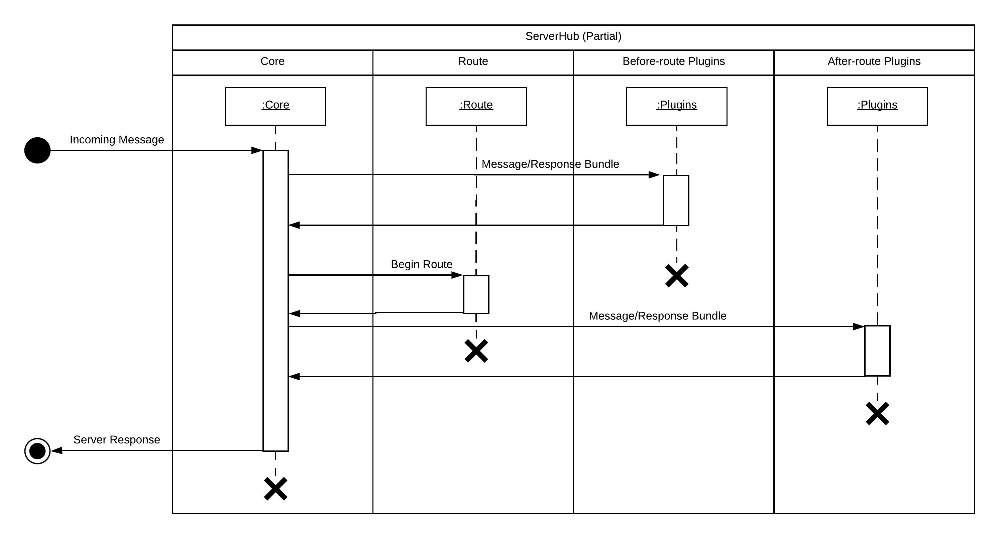

插件系统简介
自 v1.0.0-beta 起可用
由于 ServerHub 自身是一个 Web 服务器的基础，而如果你一切从头开始，那么就需要应付一大堆非常基本的问题。又因为 ServerHub 会自动将请求派发到相对应的处理机制（比如控制器或缓存命中器），所以你难以对每一个请求的处理函数进行单独操作。这样不仅开发难度高，维护和重构的成本也随程序体量而增加。试想，能否在路由开始之前就进行一些操作呢？比如说权限验证或是请求过滤。抑或在路由完成之后做一些事，比如触发一个统计函数来分析对资源的使用情况……
这里，我们将“插件”概念介绍给你。本文所述甚是简单，但是不要错过了打造你的专属插件的好机会！
Plugin 钩子
首先来看一幅顺序图：（你可以右键单独浏览图片，这样清晰度会更高）

我们称其为钩子，但是它看起来更像是一个必须的过程。不过，由于之前版本并未引入这一概念，插件更像是从原来的流程当中强行中断的一部分，所以也就以钩子来称呼了。当某个 HTTP 请求到达 ServerHub 的时候，它会被 ServerHub 的 core 模块处理。此时第一阶段插件被激活，待它们处理完毕，core 又会把请求交给 route 模块。Route 完毕得到的结果会被用来激活第二阶段的插件，等到它们也处理完了，这些请求会被 core 根据 route 结果派发给对应的处理程式。
两个阶段的插件分别是 路由前置插件 和 路由后置插件。
前置插件通常并不关心这个请求会被路由到哪里。它们往往做一些比较全局性的工作，比如全局权限验证。而后置插件往往更关注于请求目标的类型，并针对类型的不同采取不同的措施。
怎样创建一个插件？
插件其实就是完全的 Node.js 模块。它遵循模块的所有准则。但是有些额外的限制：
-
合法的插件必须包括一些属性：
-
app_name为你的插件取一个独一无二的名字。所有的字母必须小写，并且数字、字母、单独的连词符才是合法的选择。比如 serverhub-plugin-my-filter （注意前缀应该是 serverhub-plugin-）。 -
version插件的版本号。建议按照 NPM 的规范来处理。 -
version_support标记当前插件版本支持的最低 ServerHub 版本号，低于此版本则无法注册成功。 -
phase指明这是一个前置插件还是后置插件。 -
main插件的入口调用函数。对于前置插件，此函数有两个必须参数；后置插件则为三个（第三个是路由的结果）。
-
-
下面举一个例子
module.exports = { app_name: 'serverhub-plugin-my-plugin', version: '0.1.0', version_support: '1.0.0-alpha', phase: 'before-route', main: function(req, res) { console.log("Hello, this is my first ServerHub plugin!"); } }
重要提示
创建插件时，下面的内容一定要牢记于心
永远不要在插件中试图修改传入
main 函数的参数中的 ServerResponse 对象！